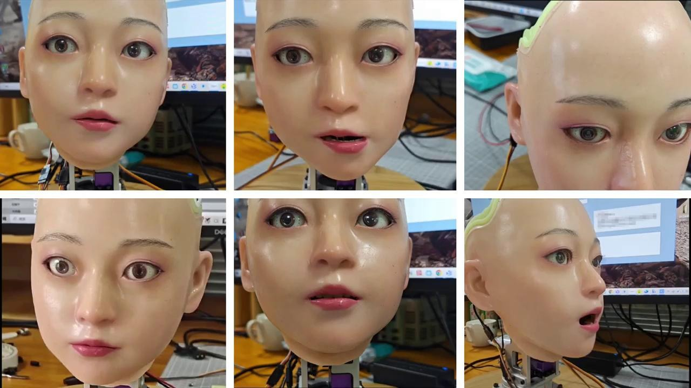
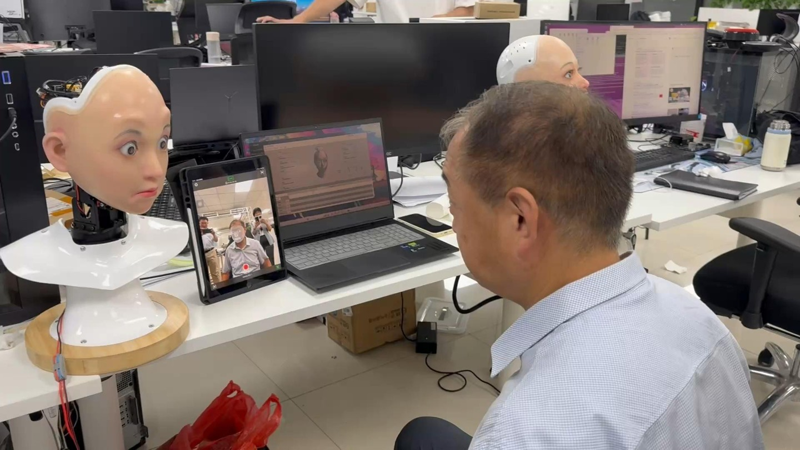

具身情感交互
融合语音、视觉与语言信息，研究情绪理解、语音驱动表情生成及多模态大模型支持的人机交互，让感知与表达形成闭环。
EMBODIED INTELLIGENCE · AFFECTIVE ROBOTICS
讲师 · 博士
上海理工大学 · 机器智能研究院
探索机器人的情感表达，理解神经系统的计算机制。
围绕多模态感知、表情生成与仿生控制，研究自然的人机交互；以图学习和神经动力学建模连接脑科学与机器人智能。
01 / PROFILE
我是袁野，上海理工大学机器智能研究院讲师，博士。研究聚焦具身情感交互、机器人视觉与类脑计算，致力于将多模态机器学习、机器人控制与计算神经科学相结合，探索具有自然表达与交互能力的仿人机器人。
目前的工作涵盖语音驱动的情感表情生成、面部运动学建模与表情模仿、多模态对话情绪识别，以及动态环境中的视觉感知与定位。同时，开展基于神经钙活动的连接关系挖掘、神经网络动力学与运动行为建模研究。
2015年获重庆大学自动化专业学士学位，2020年获上海交通大学控制科学与工程博士学位。曾赴澳大利亚昆士兰脑研究所交流访问，并在上海交通大学电子信息与电气工程学院从事博士后研究。自2022年起在上海理工大学工作，主持国家自然科学基金青年项目，入选学校“思学计划”。
聘期成果中，论文按第一作者或唯一通讯作者口径统计；竞赛成果包含指导与共同指导。
02 / RESEARCH
融合语音、视觉与语言信息，研究情绪理解、语音驱动表情生成及多模态大模型支持的人机交互，让感知与表达形成闭环。
研究面部关键点预测、表情到执行器的映射、模仿学习及视觉SLAM，连接数据驱动模型与真实机器人的运动执行。
以图神经网络、结构可塑性与动力学建模研究神经连接、信号传递和运动行为，探索生物智能的计算原理。


团队以仿生表情机器人为研究平台，开展面部运动控制、多模态感知与生成式交互研究，并探索科艺融合演出、科教培训和公共导览等应用。相关机器人已参与《巨物之城》、广富林昆曲表演及世界人工智能大会展示活动。
03 / PUBLICATIONS
精选与当前研究方向相关的成果。论文年份按正式卷期或谷歌学术记录列示。
Expert Systems with Applications 295, 128871
论文详情 ↗IEEE/RSJ International Conference on Intelligent Robots and Systems (IROS)
论文详情 ↗Expert Systems with Applications 262, 125492
论文详情 ↗PLOS Computational Biology 21(6), e1013171
论文详情 ↗npj Systems Biology and Applications 11, 122
论文详情 ↗Computers in Biology and Medicine 155, 106694
论文详情 ↗Yuan Y, Huo H, Fang T. Effects of metabolic energy on synaptic transmission and dendritic integration in pyramidal neurons[J]. Frontiers in computational neuroscience, 2018, 12: 79.
Yuan Y, Huo H, Zhao P, et al. Constraints of metabolic energy on the number of synaptic connections of neurons and the density of neuronal networks[J]. Frontiers in computational neuroscience, 2018, 12: 91.
Yuan Y, Liu J, Zhao P, et al. Structural insights into the dynamic evolution of neuronal networks as synaptic density decreases[J]. Frontiers in Neuroscience, 2019, 13: 892.
Yuan Y, Liu J, Zhao P, et al. A graph network model for neural connection prediction and connection strength estimation[J]. Journal of Neural Engineering, 2022, 19(3): 036001.
Yuan Y, Liu J, Zhao P, et al. Spike signal transmission between modules and the predictability of spike activity in modular neuronal networks[J]. Journal of Theoretical Biology, 2021, 526: 110811.
Liu N, Mou H, Tang J, Yuan Y*, et al. Fully Connected Hashing Neural Networks for Indexing Large-Scale Remote Sensing Images[J]. Mathematics, 2022, 10(24): 4716.
04 / FUNDING
2023 — 2025
国家自然科学基金青年项目 · 项目负责人 · 62206175
研究神经连接关系推断、连接强度估计，以及网络结构与神经信号传播的关联。项目计划期：2023年1月至2025年12月。
主持上海市教委产学研项目；参与仿生表情机器人交互算法研发与机器人相关团体标准制定。
05 / EXPERIENCE
机器智能研究院
电子信息与电气工程学院
澳大利亚
控制科学与工程
自动化
06 / EDUCATION
2022—2025聘期内承担6门本科生及研究生课程，指导或协助指导研究生10人，将机器人研究与项目式教学相结合。
医学图像处理与分析 · 科技写作 · 软件工程导论 · 软件测试与维护 · 数字信号处理B · 数字信号处理实验A
07 / COMMUNITY
合作撰写2025年类脑智能专题社论 Brain-inspired intelligence: the deep integration of brain science and artificial intelligence；担任 Frontiers in Neuroscience 审稿人。
专题社论 ↗欢迎围绕具身智能、多模态交互与计算神经科学开展交流。